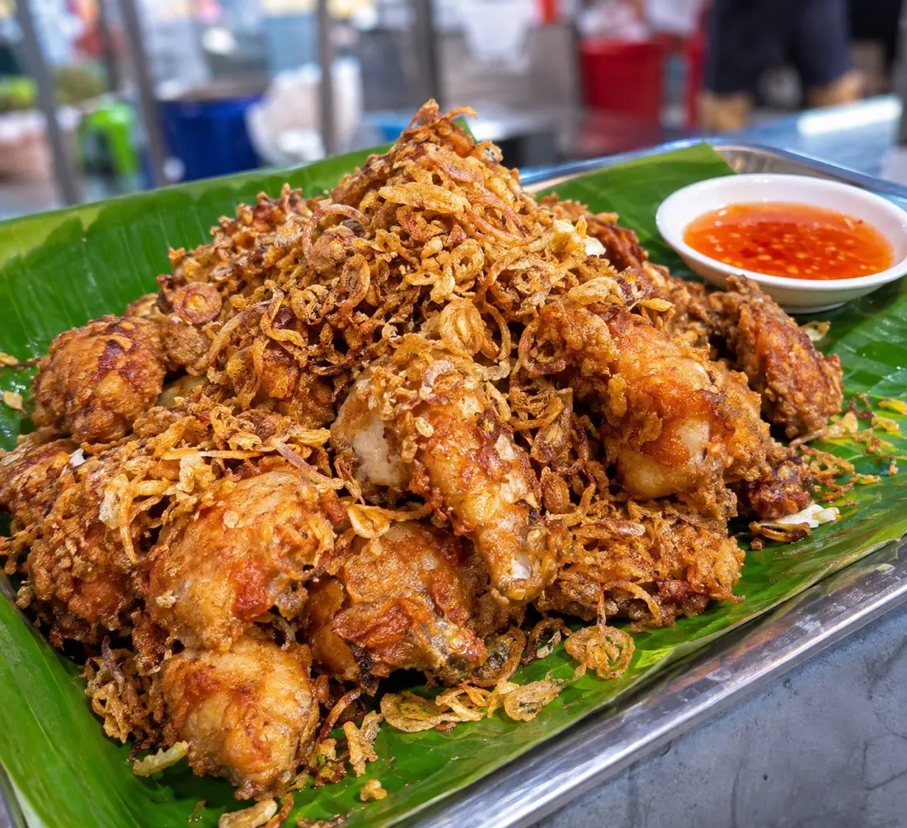

Chicken marinated in toasted coriander and cumin, fried to a shattering crust, buried under a hill of golden fried shallots — the fried chicken the whole country drives south for.

ไก่ทอดหาดใหญ่ is Hat Yai's answer to fried chicken, and it is defined by two things: the toasted spice marinade — coriander seed, cumin and white pepper toasted in a dry pan before pounding, a southern habit — and the fried shallots that arrive on top like a second skin. Pim's version is explicit about the balance: "this formula is spice-forward and salty, not sweet. I'd eat it with no dip at all."
The spice step matters. Pim's recipe toasts the whole spices three minutes on low heat — "careful, don't let them burn" — before the shallots, garlic and salt join in the mortar. That toasting is what separates this chicken from the sweet soy marinades of other regions: the spices arrive roasted, not raw.
Then the crust. Wongnai's shop version has the stall trick: น้ำปูนใส, lime water — the same calcium solution used in hoy tod — stirred ice-cold into the batter so the crisp survives longer, with the chicken pricked or scored so it cooks through without burning the coating. The two sources converge on the service: fried shallots on top, and a chilli dip on the side for anyone who wants more heat.
| Thai | English | Amount |
|---|---|---|
| น่องติดสะโพก | Drumstick-thighs, large | 4 (~1.25 kg) |
| ลูกผักชี | Coriander seeds | 1 tbsp |
| ยี่หร่า | Cumin seeds | ½ tbsp |
| พริกไทยขาว | White peppercorns | ½ tbsp |
| กระเทียมไทย | Thai garlic, peeled | 2 tbsp |
| หอมแดงซอย | Shallots, sliced | ¼ cup (marinade) + 1 cup (fried) |
| น้ำปลา | Fish sauce | 2 tbsp |
| เกลือ | Salt | 1 tsp |
| น้ำตาลทรายไม่ขัดสี | Unrefined sugar | 1 tbsp |
| แป้งข้าวเจ้า | Rice flour | 2 tbsp |
| แป้งทอดกรอบ | Crispy flour | 2 tbsp (+ ½ tbsp for the shallots) |
| น้ำเย็นจัด | Ice-cold water | 4 tbsp |
| น้ำมัน | Oil for frying | ~1 L |
Wongnai's shop trick: stir 2 tbsp ice-cold lime water (น้ำปูนใส) into the batter so the crust stays crisp — and prick or score the chicken before marinating so the heat reaches the bone.
Toasted spices or powders. Pim toasts and pounds whole coriander and cumin; Wongnai uses ready-ground powders plus garlic powder and chicken seasoning powder. Same aromas, different freshness — the pounded version is louder.
Sweet or salty. Pim's version is deliberately salty, not sweet; Wongnai's adds no sugar at all; the Pantip stall recipe leans on white soy and seasoning sauce. The southern signature is savoury — sweetness marks the central-Thai versions.
Lime water. Wongnai's 2 tbsp of lime water in the batter is the stall's long-crisp trick; Pim skips it and relies on the rice-flour mix. Both crisp; Wongnai's stays crisp longer.
The cut. Pim uses big drumstick-thighs; Wongnai does full wings plus thighs; the Pantip stall uses drumsticks or thighs. Any bone-in, skin-on cut works — boneless doesn't.
Flour coating. Pim's rice-flour-plus-crispy-flour batter versus Wongnai's garlic-pepper crispy flour alone. The rice flour gives the shatter; the crispy flour keeps it.
This recipe is translated from the following Thai-language sources. Where they disagree, we've said so.
1. Pim's Kitchen — "ไก่ทอดหาดใหญ่" (the recipe used here — toasted spices, salty not sweet) — pim.in.th
2. Wongnai (Nickktwf, 9.8K reads) — "ไก่ทอดหาดใหญ่" (shop-style: lime-water batter, wings + thighs) — wongnai.com
3. Pantip — "ใครสนใจสูตร ไก่ทอดหาดใหญ่บ้าง" (a mother's stall recipe, soy-based marinade) — pantip.com
4. Pantip — "ไก่ทอดกรอบนอก นุ่มใน หมักด้วยเครื่องเทศเข้มข้น" (4–5 hour marinade + fried shallots) — pantip.com